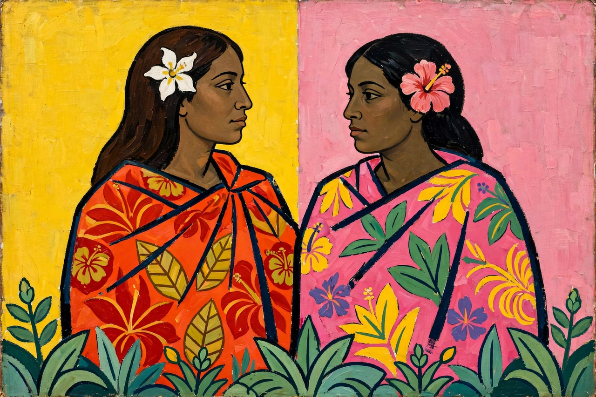

Paul Gauguin

A Tahitian scene by Gauguin: two women in bright wraps against flat fields of yellow and pink, a Breton-style simplification of formEugène Henri Paul Gauguin (7 June 1848 – 8 May 1903) was a French Post-Impressionist artist. Unappreciated until after his death, Gauguin is now recognised for his experimental use of colour and Synthetist style that is distinct from Impressionism. Towards the end of his life, he spent ten years in French Polynesia, where he painted his most famous works.
A former stockbroker who painted on Sundays, Gauguin abandoned his family and career for art at 35. After a disastrous nine weeks painting with Vincent van Gogh in Arles (ending with van Gogh's ear crisis), he worked in Brittany (Pont-Aven) and then Tahiti, seeking a 'primitive' purity, producing works such as Vision of the Sermon (1888), The Yellow Christ (1889) and the monumental Where Do We Come From? What Are We? Where Are We Going? (1897). He died in the Marquesas Islands, impoverished and ill.